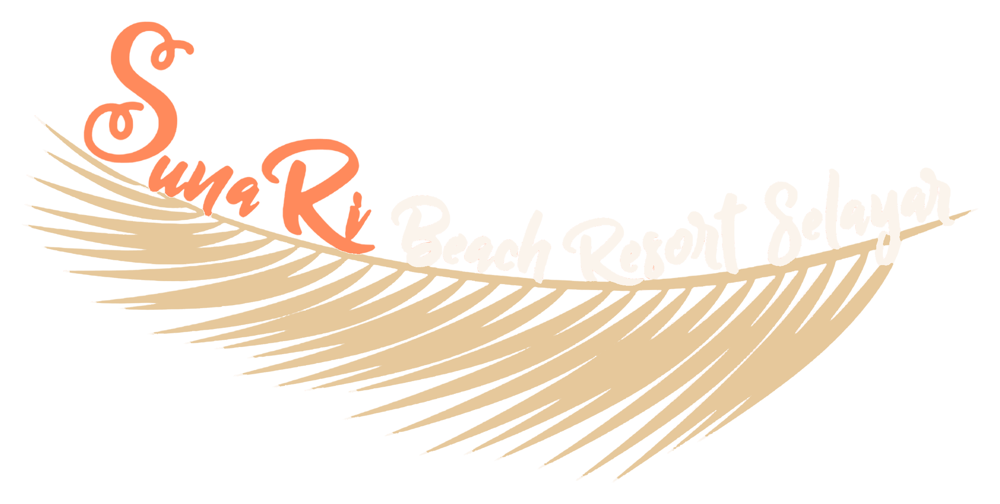
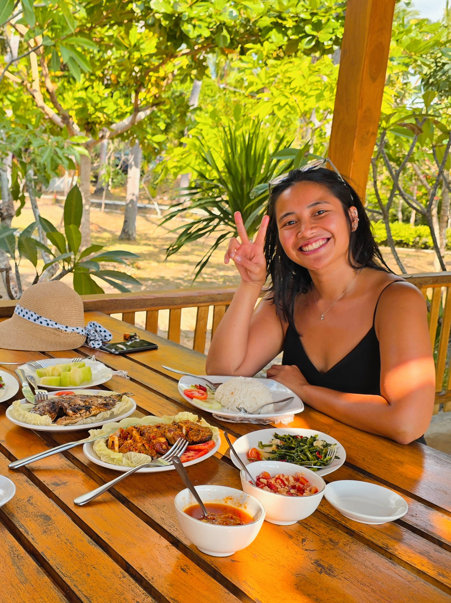
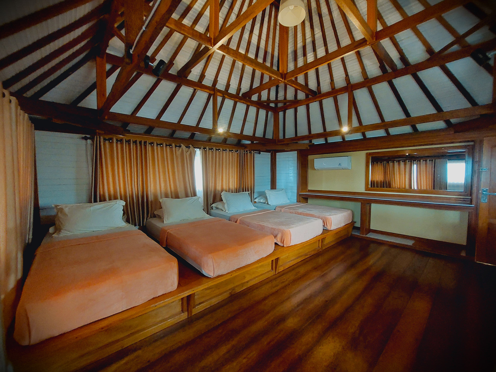
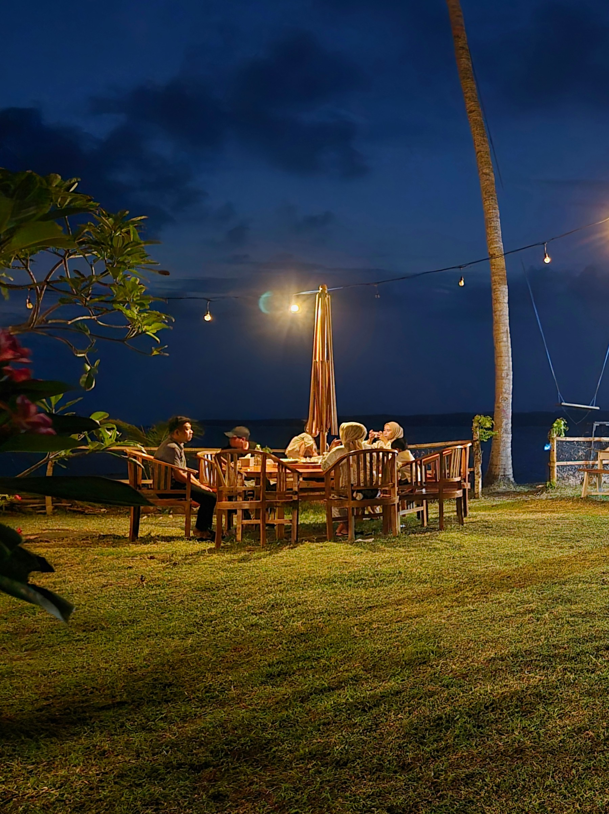
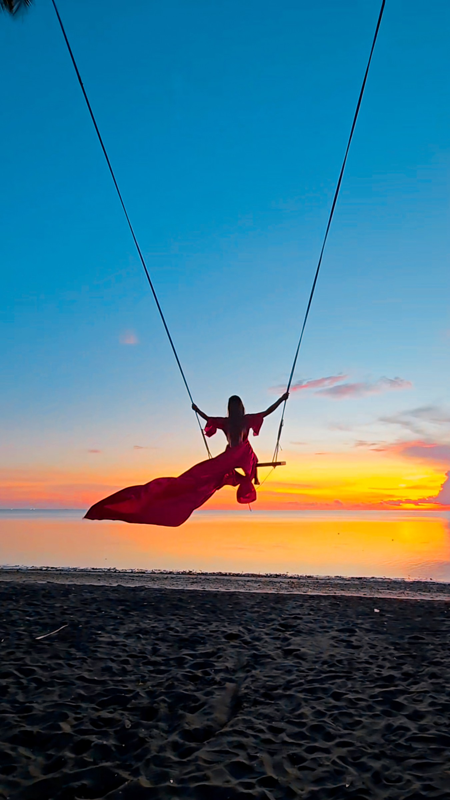

Check-in 14.00
Check-out 12.00 WITA


Sebelum menginap
Tanya SunaRi
Jawaban untuk pertanyaan yang paling sering ditanyakan tamu
Ketuk untuk lanjut →


Ingin datang lebih awal atau pulang lebih sore? Tanyakan dulu lewat WhatsApp sebelum tiba.

Disajikan di Bajoy Beach Resto, menghadap Pantai Sunari.

Tetap terhubung, tetapi kami sarankan sesekali simpan ponsel saat senja datang.
Semua bungalow punya teras pribadi. Tipe 2 orang bisa sampai 3 orang dengan extra bed, Family Superior sampai 8 orang.

Kelas tertinggi kami: air panas, bathtub di kamar mandi semi-outdoor, king bed, TV dan mini bar.


Untuk keluarga besar, Family Superior Bungalow: 2 lantai, kamar mandi di kedua lantai, untuk 6 orang (maks. 8).

Sekitar pukul 17.50–18.00 WITA, paling cantik di bulan April–Desember. Teras VIP Standard menghadap langsung ke arah matahari terbenam.

Menu harian, ikan bakar & seafood.

Ikan bakar & seafood di tepi pantai saat matahari terbenam. Pesan paling lambat H-1 lewat WhatsApp.
Makassar ke Bandara H. Aroeppala, Selayar.
Makassar ke Pelabuhan Bira (Bulukumba), lalu feri ke Pelabuhan Pamatata.
Jl. Poros Benteng–Appatana KM 14, Bontosikuyu. Bisa kami jemput.
Daftar tarif lengkap kami kirim lewat WhatsApp. Konfirmasi jadwal paling lambat H-1.

Pulau Gusung terlihat langsung dari Pantai Sunari. Sudah termasuk kapal, alat snorkeling & lunchbox. Detail paket kami kirim lewat WhatsApp.
Harga & ketersediaan kami kirim langsung lewat WhatsApp, sesuai tanggal & tipe kamar.
tanggal check-in & check-out, jumlah tamu, tipe kamar
harga & ketersediaan terbaru
kirim bukti transfer, booking terkonfirmasi

Jl. Poros Benteng – Appatana KM 14, Dusun Tile-Tile Utara, Desa Patikarya, Kec. Bontosikuyu, Kab. Kepulauan Selayar, Sulawesi Selatan.
Ketuk stiker lokasi / link Google Maps
Kami balas secepatnya, termasuk harga kamar, Senja Dinner, antar-jemput & tur pulau.
Kamar, sarapan, senja, aktivitas, cara ke Selayar, tanya saja.
Tambahkan detail di baris ini. Gunakan teks Instagram dengan font serif & warna Driftwood Deep.